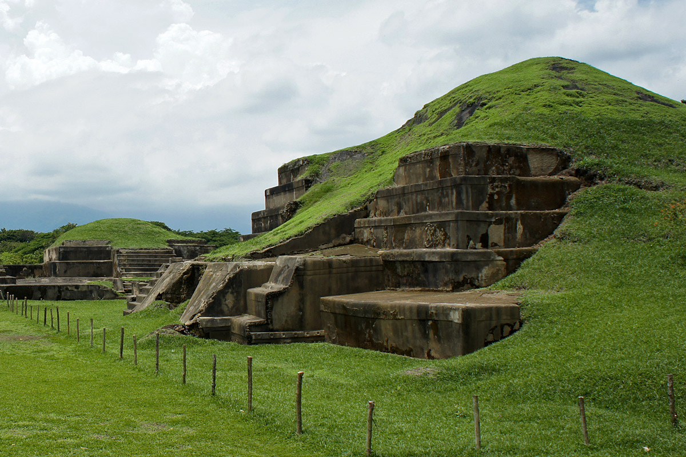

El Salvador
backLago de Coatepeque
El lago Coatepeque es de origen volcánico y está situado a 18 km al sur de la ciudad de Santa Ana en el municipio de El Congo. Tiene una altitud de 745 metros y una superficie de 25.3 km².
Además, su profundidad de 115 m. Cuenta con una isla llamada la Isla del Cerro o Teopán. El topónimo "coatepeque" significa “Cerro de Culebras” en lenguaje náhuatl.
El lago de coatepeque es una de las 7 maravillas de la naturazela a nivel mundial
¿Como llegar?
Desde la ciudad capital, inicie el recorrido por la Carretera Panamericana CA – 1 rumbo a Santa Ana; en El Congo, a la altura del kilómetro 50 se toma el desvío hacia el Lago, desde sus miradores en esta calle apreciará un majestuoso paisaje lleno de azules y verdes.
Mas Información visita:
www.lagodecoatepeque.com
Puntuación:

Playa San Diego
Esta es una amplia playa con más de 7 kilómetros (4.35 millas) de extensión, ideal para deportes como jogging, volley ball o fútbol. A pesar de ser concurrida, puede gozar de mucha privacidad. Gracias a su área extensa de playa, este es un escenario ideal para acampar al frente de la playa. Para su tranquilidad y seguridad, puede acompañarse de la Policía Nacional de Turismo (POLITUR) sin ningún costo. Solo tiene que solicitar este servicio con una semana de anticipación. Se sugiere consultar el procedimiento a seguir con dicha institución. Esta es una playa rodeada de ranchos privados pero el acceso a su costa es abierta a todo público. Dentro de esta zona podrá visitar el paradisíaco panorama que ofrece la Bocana de San Diego, a 5 minutos de distancia (en vehículo). Podrá observar la actividad de los lugareños y pescadores en busca de mariscos entre los manglares. Desde este punto, podrá apreciar las montañas que rodean al departamento de La Libertad y el impresionante Volcán de San Vicente o Chinchontepec.
Como llegar
Si se transporta en vehículo, si viene desde la calle de San Salvador, tome como punto de referencia el Centro Comercial El Faro. Al llegar a este sitio, cruce a la izquierda en dirección a la Carretera del Litoral en dirigida hacia la Lotificación Playa San Diego o también conocida como calle hacia el Aeropuerto Internacional. Ruta de buses: Podrá abordar la ruta 102 y la 102-B que hace su recorrido desde El Puerto de La Libertad hasta San Diego. El acceso a la playa es cercano a la entrada. Costo de pasaje estimado $0.50 USD - $0.75 USD.
Mas Información visita:
www.elsalvador.travel
Puntuación:
Cerro Verde
Forma parte del Complejo “Los Volcanes”, en donde se encuentran los volcanes de: Izalco, Santa Ana y Cerro Verde, formando parte de las áreas identificadas como prioritarias para la conservación del medio ambiente en El Salvador. El Parque Cerro Verde, esta ubicado en el cono volcánico del mismo nombre, situado en el departamento de Santa Ana y Sonsonate. Historia El Parque Cerro Verde, aunque comúnmente llamado “cerro”, trata de un volcán que remonta sus orígenes a más o menos 1.5 millones de años, teniendo su última erupción hace unos 25 mil años. En la actualidad alcanza los2,030 metrossobre el nivel del mar, su cráter se encuentra cubierto por la abundante vegetación o bosque nebuloso (selva mediana perennifolia.) Recursos Naturales El Parque Cerro Verde tiene un área de 52 manzanas, su vegetación esta clasificada como bosque nebuloso y en él los visitantes pueden encontrar 128 especies diferentes de aves, de las cuales 17 son tipos de colibríes, entre ellos el "Moscardón” cuyo peso es de tan sólo3 gramos, en el área también existen anfibios, reptiles, insectos, entre otros. El Parque Natural, manejado bajo un concepto completamente nuevo, desarrolla constantemente medidas de protección a fin conservar la flora y la fauna en un estado natural, ya que es un escenario de mucha vegetación de orquídeas, gallitos (Bromelias) y una enorme cantidad de especies vegetales las cuales pertenecen siempre verdes debido a la alta humedad del suelo y del aire, producto de la constante neblina y las frecuentes lluvias.
Mas Información visita:
www.elsalvador.travel
Puntuación:
Parque Nacional El Imposible
Parque Nacional El Imposible El Imposible es el parque nacional más grande de El Salvador y está ubicado en las elevaciones costeras del pacífico de Ahuachapán, entre los municipios de San Francisco Menéndez y Tacuba, al sur-oeste de la Ruta de las Flores. Esta área natural protegida es considerada la reliquia natural más importante del país por ser un ecosistema amenazado a nivel mundial (bosque tropical seco y tropical seco premontano), pero también por ser uno de los últimos refugios para una comunidad increíblemente diversa de vida silvestre, fuente de recursos hídricos para la zona y poseedor de belleza escénica para desarrollo turístico sostenible. Es por esto, que El Imposible recibe más de 8,000 turistas al año quienes visitan estas 4,000 hectáreas de bosque que son protegidas por 25 guarda parques y mostradas por un equipo de 20 guías de turismo locales, para hacer contacto con más de 500 especies de plantas, más de 100 especies de mamíferos, 53 anfibios y reptiles, 285 de aves y más de 5,000 especies de mariposas. Pero también los turistas buscan la aventura que no encuentran en ningún otro lugar del país. La topografía escarpada de El Imposible se convierte sin duda en una oportunidad para los tours de caminata extrema y para tomar fotografías fenomenales. Las caminatas se dasrrollan entre las cuestas empinadas y pendientes menores, viendo desde abajo las rocas suspendidas, dejando de lado los precipicios y los ríos, corriendo por franjas planas y cayendo en sorpresivas hondonadas, a una temperatura cálida que devuelve la salud y pone a prueba la actividad física de sus visitantes.
Mas Información visita:
www.salvanatura.org
Puntuación:
Ruta Arqueologica
Representa un acercamiento a una de las culturas más avanzadas de la humanidad; la cultura maya, en El Salvador conocerá el único sitio del mundo maya donde se aprecia la cotidianidad de sus habitantes y que ha sido declarado patrimonio de la humanidad; Joya de Cerén, así como sitios monumentales, centros ceremoniales y museos, es un verdadero viaje al pasado algo muy interesante y cultural. Joya de Cerén: Patrimonio dela Humanidad declarado en 1993 por la UNESCO, conocerála Arquitectura Doméstica de los Mayas, así como sus bellas muestras de cerámica, Este Parque Arqueológico posee un amplio Museo, Guías y senderos interpretativos. Ubicado a 36 Kms de San Salvador. San Andrés: Sitio Ceremonial, Centro Político y lugar de Observaciones Astronómicas Pudo haber regido el Valle de Zapotitán posee estructuras piramidales y es actualmente lugar de investigaciones arqueológicas, en su área existen vestigios de un obraje de añil que fue soterrado por la erupción del Volcán El Playón en 1658 e inundado por las aguas del Río Sucio. Tazumal: Sitio Ceremonial, que posee la pirámide más alta descubierta en El Salvador con 24 Mts de altura. En su museo se encuentra una Escultura lítica de 4 caras con grabados en relieve encontrada en 1942 y que data de800 A.C. aprox. Cuenta con un interesante museo con muchas joyas arqueológicas. Casa Blanca: Parque Arqueológico con varias estructuras piramidales, museo, y un interesante Taller interactivo de teñido con añil (Indigo) donde puede diseñar sus propios dibujos para plasmarlos en prendas de vestir. Atractivos cercanos Ciudad de Santa Ana: Visite su Centro histórico, Su Catedral Neo Gótica construida entre 1905 y 1922 , Su bellísimo Teatro que en 2010 cumplió 100 años de haber sido construido y decorado por exquisitos detalles elaborados por renombrados arquitectos y artistas italianos , Su palacio Municipal cuenta con un elegante diseño que data del año 1874.
Mas Información visita:
www.elsalvador.travel
Puntuación:
Tour Monseñor Romero
Este tour de 6 horas inicia por el Centro Monseñor Romero y Museo de Mártires, Universidad Centroamericana, UCA, que incluye la Sala de Mártires, Capilla y el Jardín de las Rosas. Se continúa a la Catedral de San Salvador, sagrada morada de los restos de Monseñor Romero; y posteriormente, hacemos una parada para almorzar. Luego, continuamos al Museo de la Palabra y la Imagen, para ver la exhibición de fotografías personales de Monseñor Romero. Y a continuación, proseguimos al Centro Histórico Monseñor Romero, dentro del Hospital Divina Providencia, recorriendo la casa en la cual vivió Monseñor y la Capilla donde ocurrió su muerte.
Lugares del Tour
Centro Monseñor Romero y Museo de Mártires, UCA (1 ½ hora) Catedral de San Salvador (40 minutos) Almuerzo (1 ½ horas) Museo de la Palabra y la Imagen, MUPI (1 hora) Centro Histórico Monseñor Romero, Hospital Divina Providencia (1 ½ hora)
Mas Información visita:
www.elsalvador.travel
Puntuación:
Ruta de las Flores
Ruta de las Flores
Agradable corredor que atraviesa una de las más florecientes zonas de el salvador, cruzando entre bosques cafeteros, donde prevalece el clima fresco, visite e interactúe en lugares de interesante cultura e historia, peculiar gastronómica y contacto directo con nuestros recursos naturales.
Nahuizalco:
Bella Ciudad localizada a 70 Kms dela Capital con una fuerte presencia de población indígena iglesia colonial construida en Siglo XVII, Su patrimonio económico local basado en la industria artesanal de las fibras naturales como; Madera, Mimbre, Tule, entre otras; Visite el Centro de Desarrollo Artesanal para conocer sobre la creatividad y fineza de las laboriosas manos que día a día expresan belleza de estos trabajos, y su Centro de Interpretación Patrimonial.Salcoatitán:
Ciudad de Artistas cuenta con galerías de arte, y exposiciones permanentes, Ubicada a 1045 msnm, puede disfrutar de la comida típica en su plaza central y admirar su iglesia estilo colonial recientemente reconstruida, pueblo donde se cultivó la primera planta del virtuoso Café, patrimonio actual de dicho poblado.Juayúa:
Su nombre significa “Río de Orquídeas Moradas”, ubicada a 1,025 msnm, fundada desde 1877 con ese nombre, su economía se basa en el cultivo de Café y producción de plantas ornamentales, puede disfrutar de su tradicional feria Gastronómica que se realiza todos los fines de semana, no puede dejar de visitar sus impresionantes cascadas de aguas cristalinas y bello entorno natural, saboree el café Gourmet que se produce y sirve en esta fresca comunidad.Apaneca:
Es la ciudad ubicada a mayor altura de El Salvador a 1477 msnm. Fundada en 1577 como tal, originaria de uno de los mejores cafés del mundo, en su jurisdicción se encuentra Santa Leticia, sitio arqueológico muy importante por sus figuras talladas en piedra de origen pre colombino, Apaneca es también sinónimo de emocionantes actividades de turismo de aventura, como: Canopy, tour en moto, buggies, caminatas, camping, parapente, entre otros.Ataco:
A 1275 msnm, encantadora ciudad colonial con olor a villa antigua, de calles empedradas, iglesia colonial y perteneciente a Los Izalcos desde sus inicios hasta 1824 que paso a formar parte de Sonsonate y luego a Ahuachapán, rodeada de cafetales y decorada constantemente por la neblina, podrá apreciar la elaboración de textiles en sus talleres de hilados que aun trabajan con maquinas artesanales. Disfrute también de música folclórica en su plaza central las tardes de fin de semana saboreando las bebidas y platillos típicos.Atractivos:
Ahuachapán:
Esta importante ciudad se ha reconfigurado para recibir a los turistas de todas partes del mundo que aprecian la cultura, el sabor del buen café en acogedores restaurantes alrededor de su centro histórico, y actividades de eco turismo como un relajante baño en aguas termales o conocer los impresionantes ausoles y apreciar la energía natural de la madre tierra.Tacuba:
Posee una joya arqueológica que es los vestigios de su iglesia afectada por el terremoto de Santa Marta en 1773, camine por sus tranquilas calles, realice una caminata a Bosque El imposible, visite sus miradores, disfrute del ritmo de vida de esta ciudad enclavada en la cordillera Apaneca Ilamatepeq que está conectada por una excelente carretera.Los Naranjos:
Destino de la zona Occidental de El Salvador, a 75 kilómetros de la ciudad capital, con clima fresco propio de los 800 msnm en donde está ubicado, es una alternativa de turismo natural / ecológico y ruralidad, de gastronomía peculiar y acogedores hostales incrustados entre montañas, con escenas paisajísticas de gran nivel entre las nubes que circundan el vecino complejo de los volcanes y la misma Ruta de Las Flores. Propio para conocer la cultura del café, y al mismo tiempo degustar deliciosas tazas de Café de altura y Gourmet muy reconocidos; sin duda muy rico en Biodiversidad y flora peculiar del trópico y ornamentales entre los cerros el Águila y Los Naranjos que permiten la observación de aves nativas y migratorias de éste El Salvador. Cabe mencionar la accesibilidad de este destino entra Sonsonate y Santa Ana, la cercanía a otros polos turísticos y las mismas playas del occidente para gustos diversos y exigentes.Mas Información visita:
www.elsalvador.travel
Puntuación: